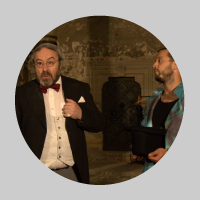
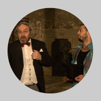

Don Juan aneb Kamenná hostina
120 minut, hraje K. O.
Režie: Jan Novák
Pøeklad: Karel Kraus
Úprava a dramaturgie: Jaroslav Someš
Výprava: Josef Jelínek
Svìtla, zvuk: Pavel Andrs



Don Juan: Josef Hervert
Sganarel: Jiøí Hajdyla
Elvíra: Radka Tesárková
Don Luis: Milan Špale
Chudák: Tomáš Horáèek
Klára nebo Markéta: Darja Jílková nebo Eva Kodešová nebo Lenka Vahalová
Filip: Jiøí Ratajík
Pan Nedìla: Jiøí Novotný
Premiéra 11. srpna 2010 na hradì Køivoklátì v rámci 8. roèníku Køivoklátských divadelních slavností
120 minut, hraje K. O.
Režie: Jan Novák
Pøeklad: Karel Kraus
Úprava a dramaturgie: Jaroslav Someš
Výprava: Josef Jelínek
Svìtla, zvuk: Pavel Andrs



Don Juan: Josef Hervert
Sganarel: Jiøí Hajdyla
Elvíra: Radka Tesárková
Don Luis: Milan Špale
Chudák: Tomáš Horáèek
Klára nebo Markéta: Darja Jílková nebo Eva Kodešová nebo Lenka Vahalová
Filip: Jiøí Ratajík
Pan Nedìla: Jiøí Novotný
Premiéra 11. srpna 2010 na hradì Køivoklátì v rámci 8. roèníku Køivoklátských divadelních slavností
Ve svìtové literatuøe existuje nìkolik archetypálních postav,
jejichž charaktery a pøíbìhy pøedstavují samy o sobì pojem a
inspirují k novým variacím. Mezi nì patøí napø. Oidipús, Faust,
Hamlet, don Quijote, ale také don Juan. Ten - stejnì jako Faust -
pøedstavuje mravní varování, aby èlovìk vìdomì a sebevìdomì
nepøekraèoval hranice, jež mu vymezil Bùh. Faust vstupuje s Bohem do
konfliktu kvùli poznání rozumovému, Juan v touze po maximu
smyslových požitkù. (Ujmou-li se tìchto témat literární velikáni
jako Goethe èi Moliére, dospívá Faust paradoxnì k smyslovým
požitkùm, zatímco Juan k filozofii).
Pøedobraz Juana najdeme už v symbolických postavách rouhaèù a
frejíøù ve støedovìkých moralitách. Jako literární typus ho však
zrodilo až španìlské baroko - Tirso de Molina a jeho tragédie
Sevillsdký svùdce a kamenný host (1630). Inspirací snad byla
skuteèná historická postava, don Juan Tenorio, který žil ve 14.
století. Popularita Molinova prostopášníka se brzy rozletìla po
Evropì - nejprve po Itálii, jejíž jižní èást byla Španìly okupována,
po roce 1653 je Juan doložen v repertoáru italských komediantù v
Paøíži a krátce nato vznikají první francouzská zpracování. V té
dobì nacházíme ohlasy už také v nìmecky mluvících zemích.
Na pøelomu 1664 a 1665 sáhl po juanovské látce i Moliére, když
potøeboval novou hru pro svùj divadelní soubor Troupe de roi au
Palais-Royal. Premiéra se konala 15. února 1665 s autorem v úloze
Sganarela. Jeho Don Juan aneb Kamenná hostina (Dom Juan ou Le Festin
de pierre) se s úspìchem dával až do Velikonoc. Potom však už se na
repertoár nevrátil, i když nemáme zprávy, že by se setksal s
protesty církve, jak tomu bylo v pøípadì Tartuffa. Znovu byl uveden
až v roce 1677, tedy ètyøi roky po Moliérovì smrti, a to v
umravnìlé, veršované úpravì, jejímž autorem byl Thomas Corneille,
synovec slavného Pierra. V této podobì se hrál na francouzských
jevištích až do poloviny 19. století! Teprve v roce 1841 byl v
paøížském Odeonu uveden v pùvodním znìní. Definitivní vzkøíšení pak
znamenala inscenace TNP (Théatre national populaire) v roce 1953 v
režii Jeana Vilara, který také ztìlesnil titulní roli.
Moliére ve svém Donu Juanovi porušuje všechna základní pravidla
klasicistního dramatu, pøedevším tøi tzv. aristotelské jednoty -
místa, èasu a dìje. Èasto se zdá, že jde o volný tok dìjových
epizod. Hra zaèíná vlastnì v polovinì pøíbìhu, pøedchozí události
(únos Elvíry, sòatek s ní a útìk od ní, stejnì jako zabití komtura)
se dovídáme jen letmo, mnohé epizody odbude jen krátká zmínka bez
dramatického využitrí (napø. pokus o únos nevìsty, pronásledování
bandity atp.). Právì pro svou vnìjší "nesourodost" pùsobí Moliérùv
text uvolnìnì a pøekvapivì modernì. Navíc je dùslednì psán prózou,
což je v klasicismu u "vysokého žánru" výjimka. Na rozdíl od jiných
Juanù má Moliéreùv hrdina nespornì øadu sympatických rysù a velké
charisma. Je to sice náboženský a mravní pokrytec, ale také
vzbouøenec proti Bohu i proti spoleènosti. Nechybí mu odvaha k
takové vzpouøe, by vzpoura mu pùsobí rozkoš. Se stejnouz rozkoší je
schopen i svádìt, znásilòovat, zabíjet. Svým okolím pohrdá a nemá
vùèi nìmu žádnou zodpovìdnost. Je zodpovìdný jenom sám sobì. Pøesto
nìkde v pozadí cítí, že "nìco" nad ním je, a právì to "nìco" se
snaží neustále provokovat až k závìreènému pádu.
Už v Moliérovì dobì - a tím více po ní - se postava dona Juana
stala hrdinou nejrùznìjších literárních a hudebních dìl, stejnì jako
jarmareèních klauniád a pimprlových komedií. Spolu s Moliérovým
dramatem patøí k nesmrtelným zpracováním pøedevším Mozartova "opera
oper" Don Giovanni, která mìla svou premiéru v Praze 29. øíjna
1787. V èinoherní verzi k nám už døíve pøivezli juanovskou látku
cizí koèovné herecké spoleènosti. Od nich pøevzali svého dona Šajna
èeští lidoví loutkáøi. Ale obrozenci míøili k pùvodní podobì - v
èervnu 1789 byl provoz letního divadla v Rùžodole za pražskou
Poøíèskou branou zahájen veselohrou o dvou dìjstvích Don Žuan aneb
Kamenný host od Václava Tháma "dle Moliéra", jak je na ceduli
výslovnì uvedeno. Èeská premiéra kompletního Moliérova textu však
probìhla až v roce 1917 ve Vinohradském divadle v pøekladu Hanuše
Jelínka, v režii K.H. Hilara, s Václavem Vydrou v titulní roli.
Juanovské téma v umìní se dodnes øadí mezi nejfrekventovanìjší. Mezi
slavnými autory, kteøí se jím zabývali, najdeme napø. Goldoniho,
Byrona, Puškina, Grabbeho, Mussata, Mériméa, Zorillu, Shawam Èapka,
Unamuna, Frische, Marbera a další a další. Každá doba si tento namìt
pøisvojuje a využívá jej k tomu, aby nastavila zrcadlo svým vlastním
mravním problémùm.
— Jaroslav Someš
— Jaroslav Someš